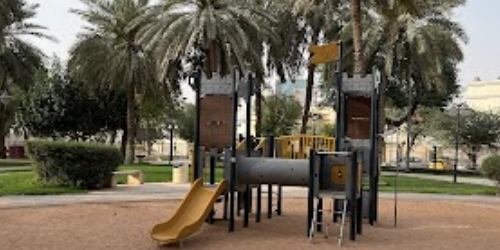
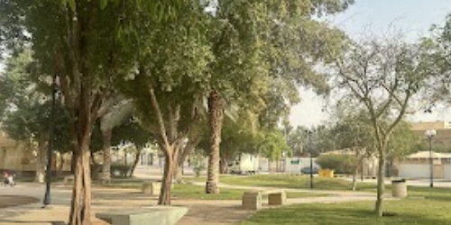
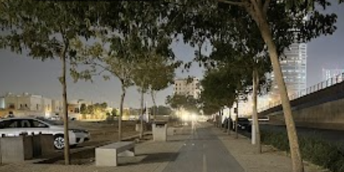

ParkAl-Olaya Park
4.3 · 1,326 ratings
12 places for an easy day out

Park4.3 · 1,326 ratings

Park4.1 · 789 ratings
4.3 · 44,103 ratings
9 paths to wander at a slower pace

Walkway4.2 · 93 ratings
4.3 · 44,103 ratings
Riyadh · 4.2 · 93 ratings
Riyadh · 4.3 · 44,103 ratings
Riyadh · 4.3 · 1,326 ratings
Riyadh · 4.1 · 789 ratings
Khaled’s collections
Explore other lists curated by Khaled.
10 places · Last edited 3d ago
11 places · Last edited 4d ago
36 places
Start the conversation
Share a tip or ask Khaled a question about this collection.